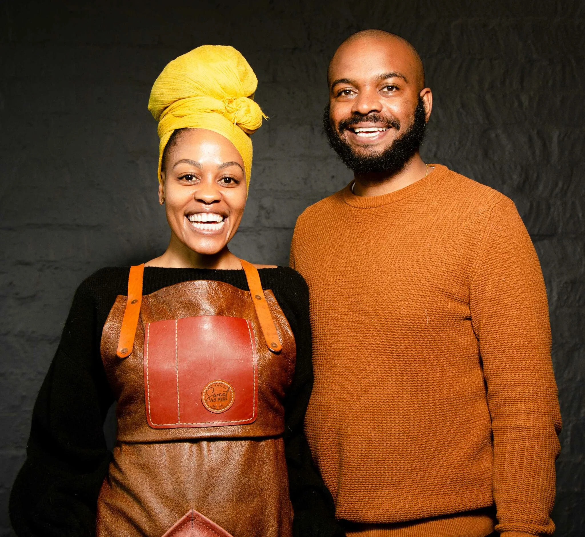

About Sweet as Pie

Our Story
Sweet as Pie is a Cape Town-based artisanal bakery founded in 2020 by Zizi Matikiti.
The business began from a passion for creating handcrafted baked products that combine delicious flavours with beautiful presentation.
Our Mission
Our mission is to create high-quality handcrafted pies and tarts that provide customers with memorable dessert experiences.
Our Vision
Our vision is to continue developing Sweet as Pie into a recognisable artisanal bakery brand while providing quality products and excellent customer experiences.
Our Values
- Quality
- Creativity
- Customer satisfaction
- Beautiful presentation
- Handcrafted products